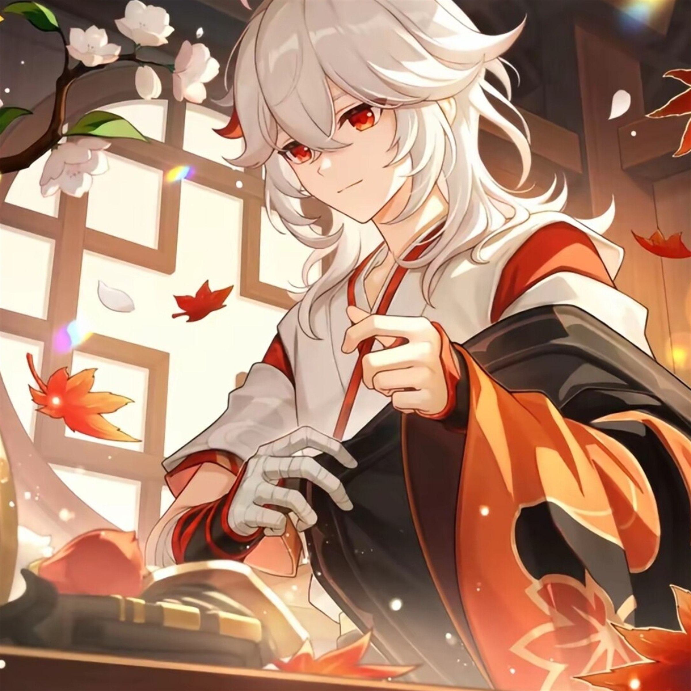
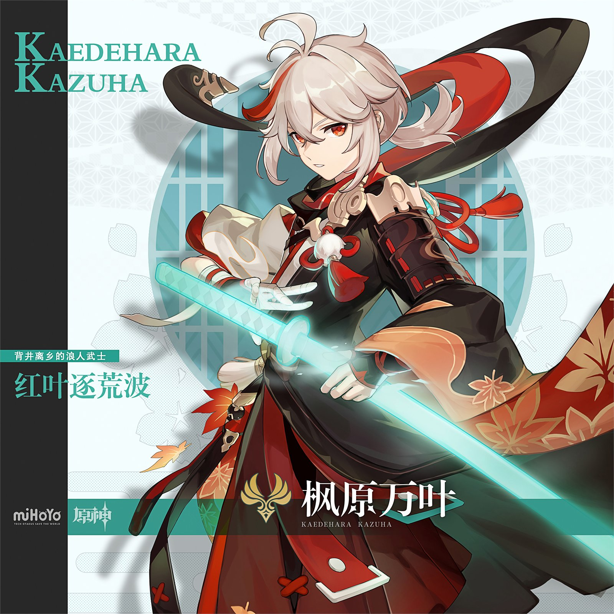
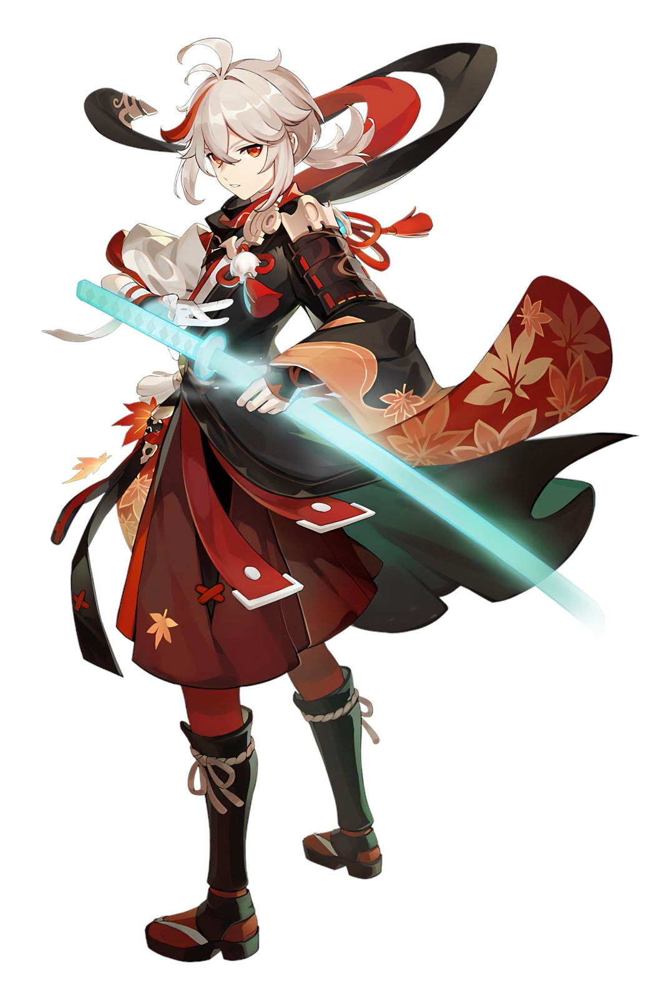
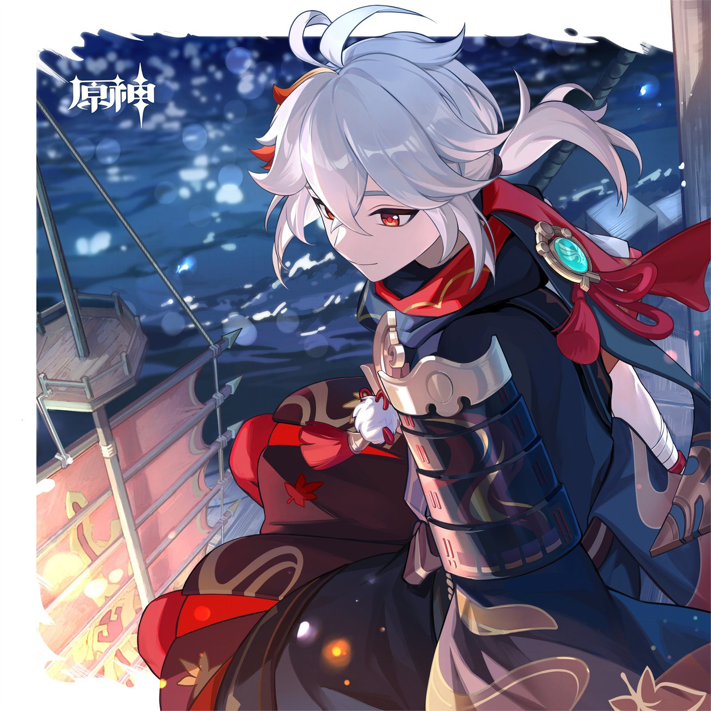
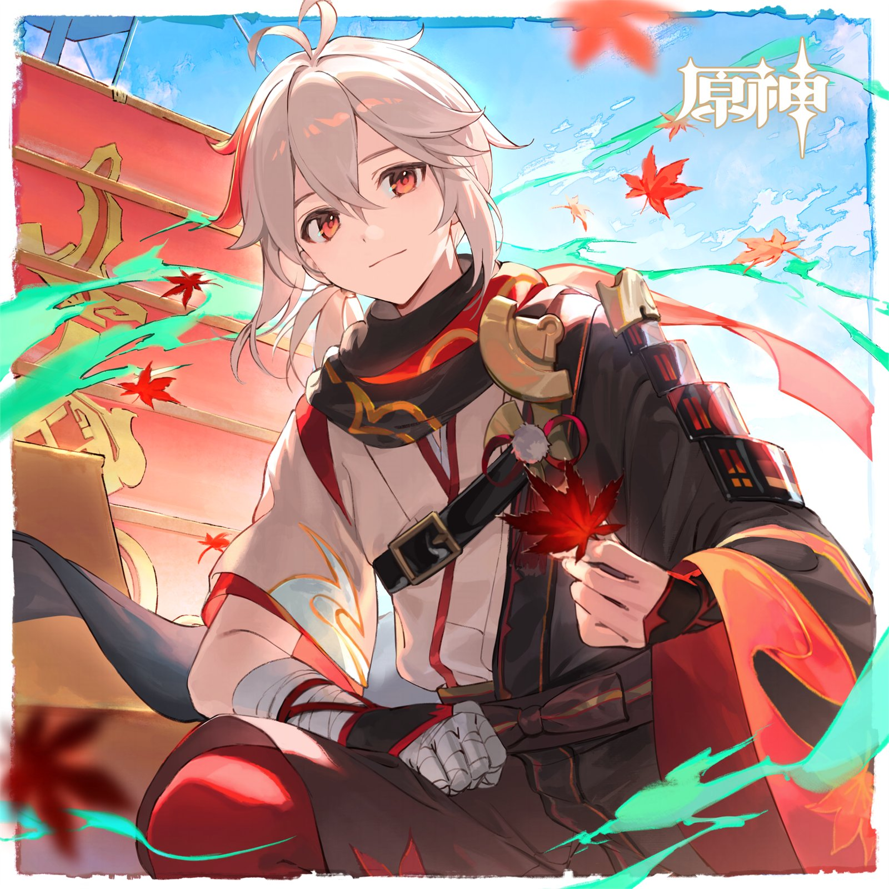
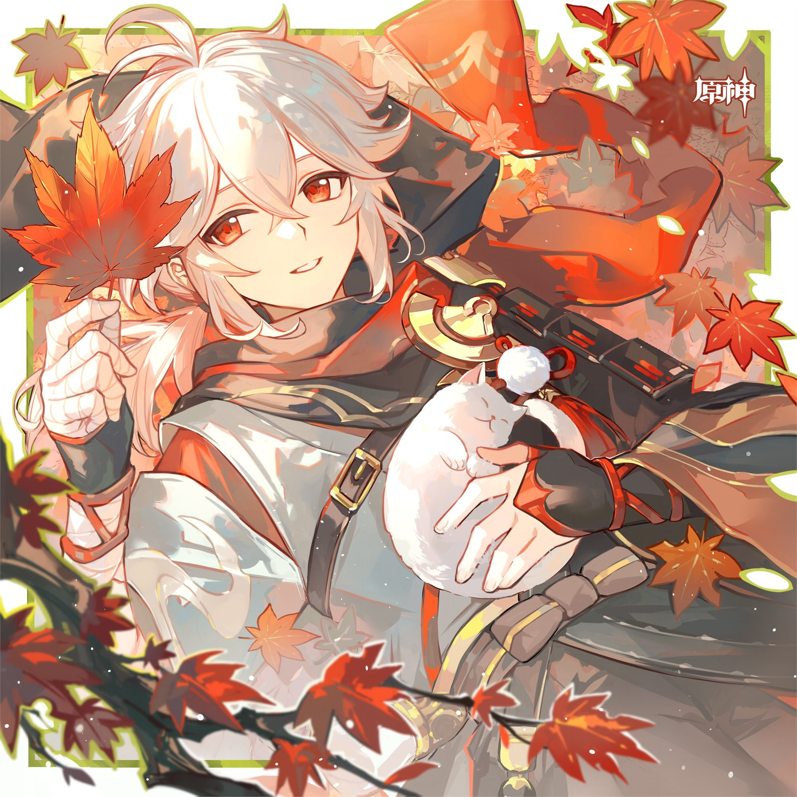
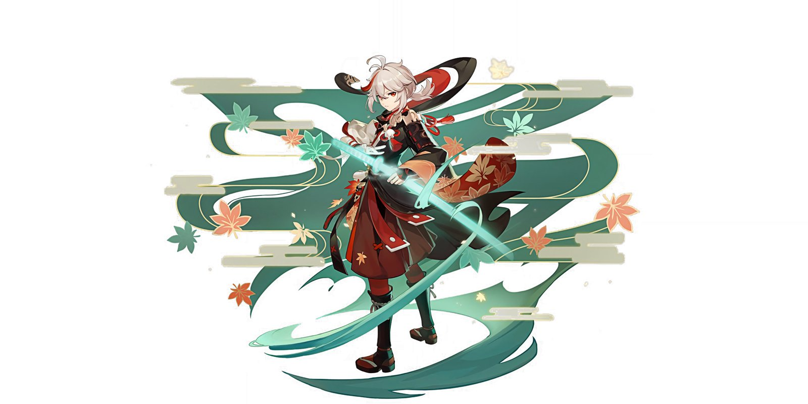

KAEDEHARA KAZUHA · 風の葉
与枫原万叶对话，听风，也听你
风过无痕处，一叶红于水上秋，人间正微凉。
THREE WAYS TO WALK
说说话，看看一路的痕迹，再拾几片枫叶。不必按顺序，风不催人。
与万叶说说话。诗意的短句，或简洁的回答，都由你选；也可以递一张照片给他。
心情的曲线、属性的雷达、拾叶的进度与主题分布，都在一方安静的面板里。
官方立绘、生日贺图与宣传壁纸，一册收齐。随手翻，随手停。
「风过无痕处，一叶红于水上秋，人间正微凉。」






请开启 JavaScript，以便进入风语。